Reisebericht
Leipzig 2026

Im Juni 2026 war die Interessengemeinschaft gemeinsam in Leipzig unterwegs – mit Zeit für die Innenstadt, historische Bauwerke, Passagen und gemeinsame Abende in Brauhaus und Biergarten. Dieser Bericht hält die schönsten Momente der Tour fest.
Anreise
Die gemeinsame Reise begann mit der Bahnfahrt nach Leipzig. Nach der Ankunft am Hauptbahnhof ging es direkt weiter in Richtung Innenstadt und zu den ersten Stationen des Wochenendes.
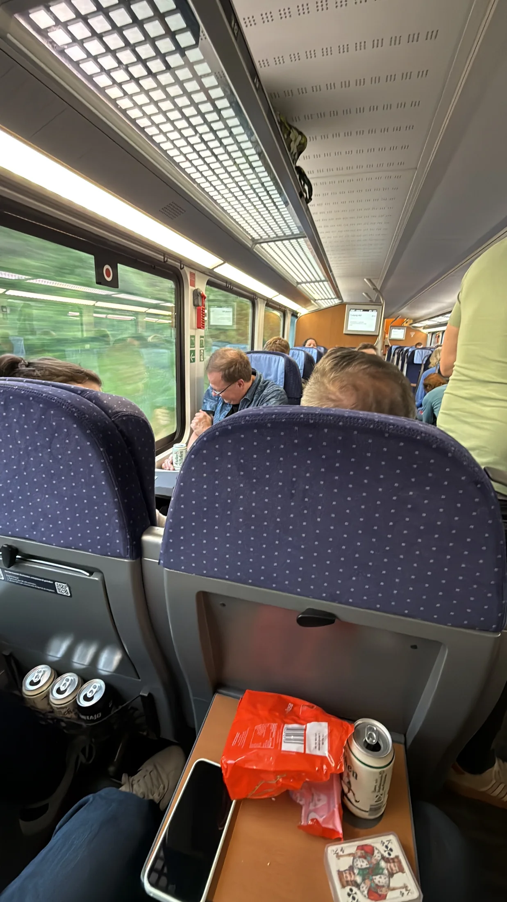
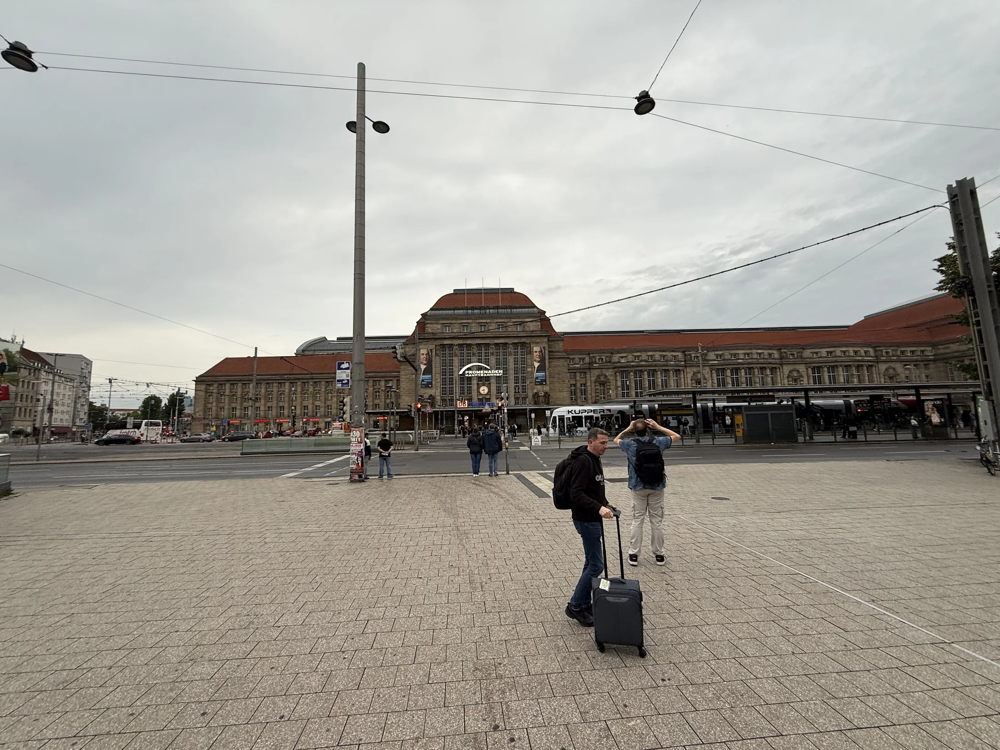
Erster Abend
Am ersten Abend standen gemeinsame Momente, ein erster Toast und ein Spaziergang durch die Leipziger Innenstadt im Mittelpunkt – bei guter Stimmung und vielen ersten Eindrücken der Stadt.
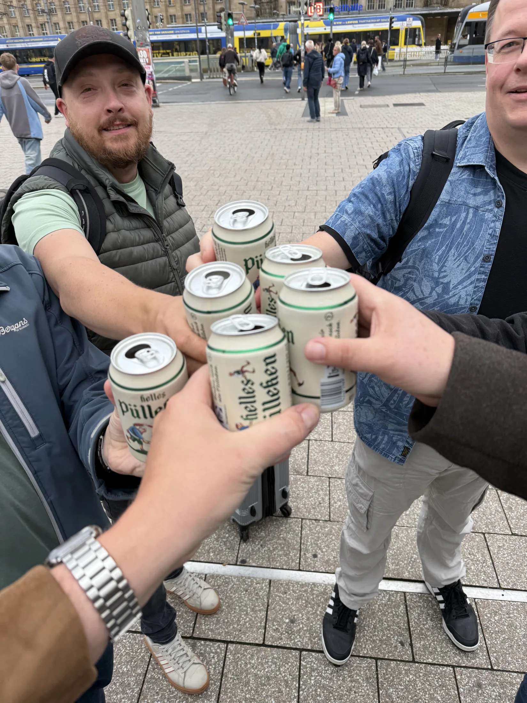
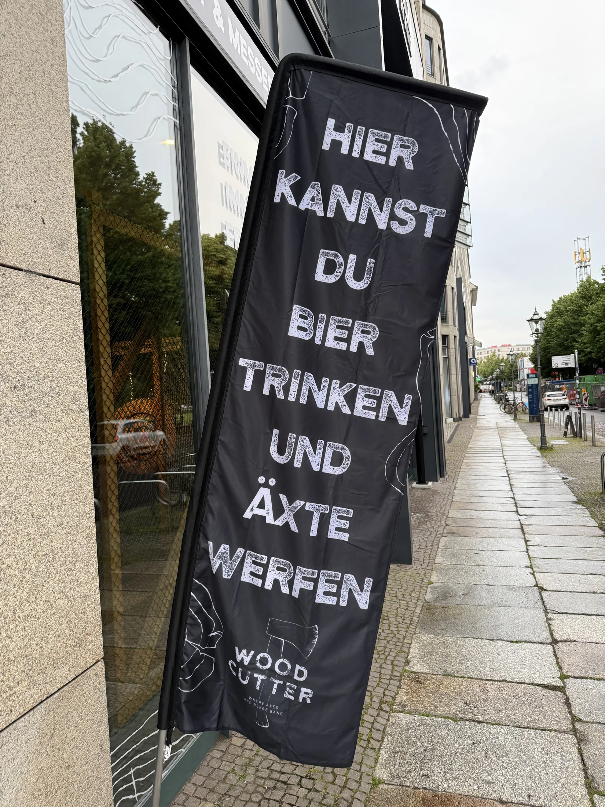
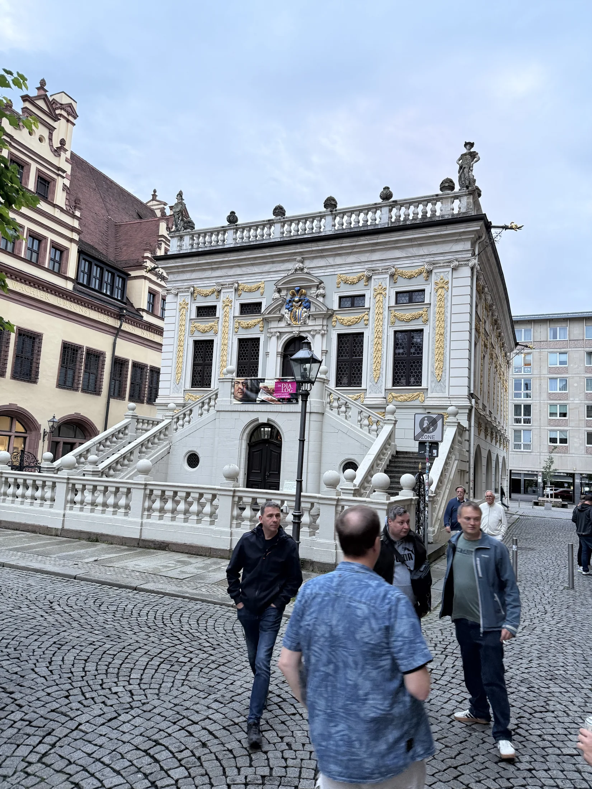
Leipzig entdecken
Beim Stadtrundgang führte der Weg über Marktplatz und Altes Rathaus, vorbei an der Nikolaikirche und weiter zu historischen Bauwerken und dem Museum der bildenden Künste im Zentrum.
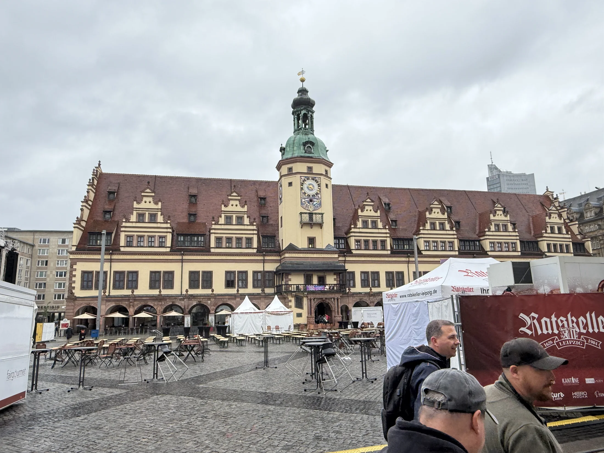
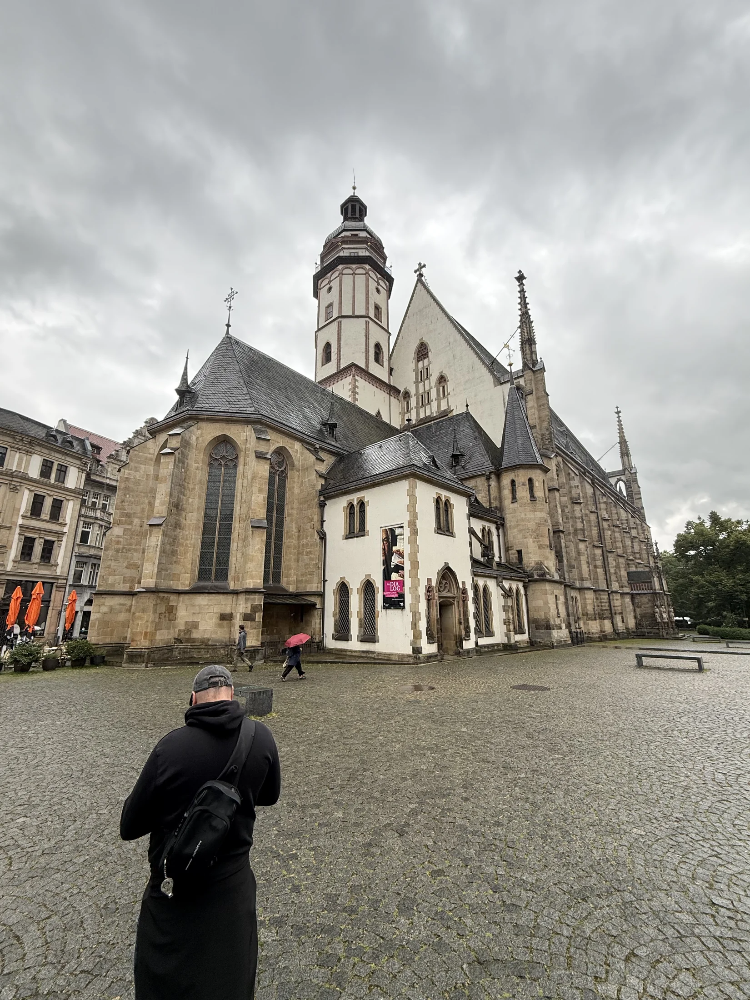
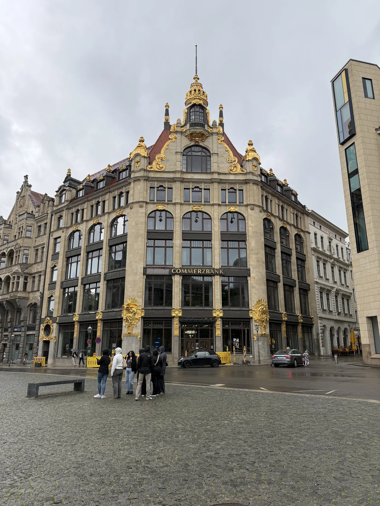
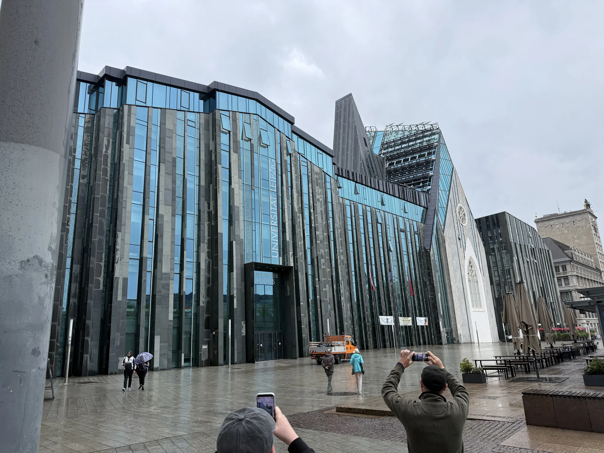
Passagen und Innenstadt
Ein besonderer Eindruck blieben die Leipziger Passagen – architektonische Höhepunkte mitten in der Innenstadt, die zum Verweilen und Entdecken einladen.
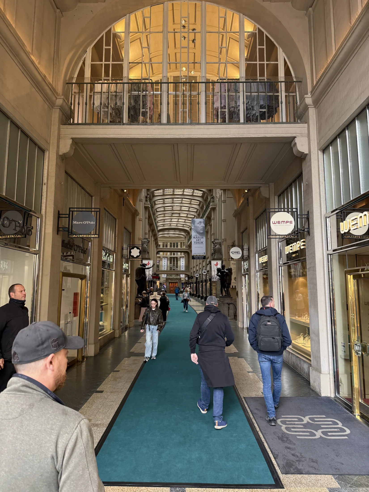
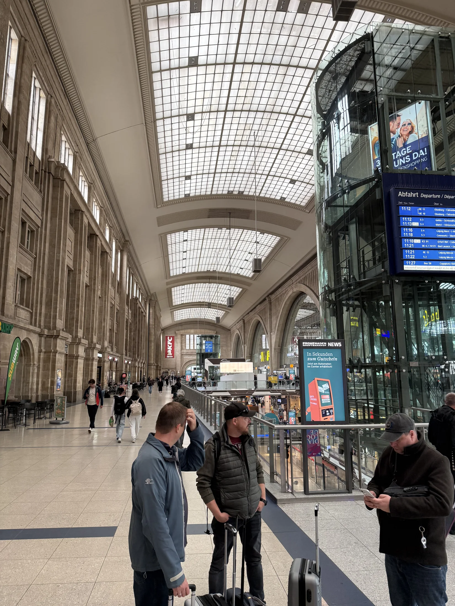
Gemeinsam unterwegs
Zwischen Stadtrundgängen, Brauhausrunden und gemeinsamen Pausen im Biergarten stand bei dieser Tour vor allem die Gemeinschaft im Mittelpunkt – mit vielen Erinnerungen, die wir gerne festhalten.
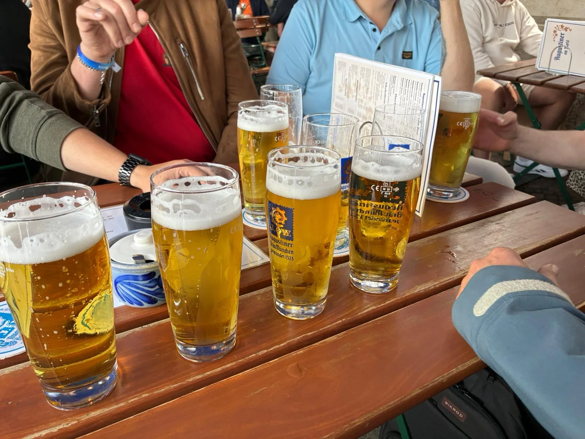
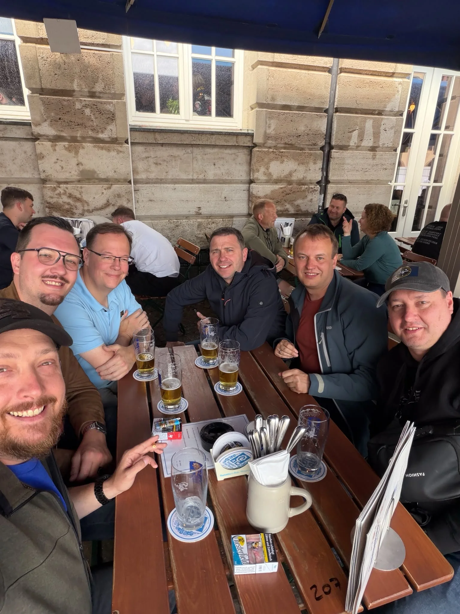
Ein gelungenes gemeinsames Wochenende in Leipzig, an das wir uns gerne zurückerinnern.
Fotogalerie
Galerie wird geladen …
Video
Video wird geladen …